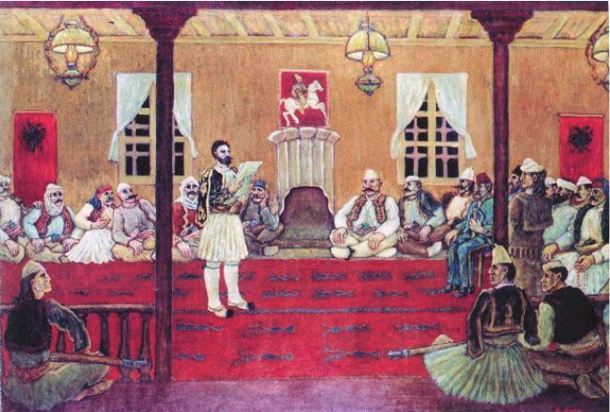

Shqiptarët bënin luftëra të vazhdueshme për t’u çliruar nga pushtuesit osmanë. Të gjithë shqiptarët u bashkuan në luftën për liri. Më 10 qershor të vitit 1878, në Prizren, u mblodhën përfaqësues nga të gjitha vendet shqiptare dhe e formuan Lidhjen e Prizrenit. Ajo e ushtroi veprimtarinë e saj në 4 provincat (vilajetet) e Perandorisë Osmane, të banuara kryesisht nga shqiptarë. Qëllimi i Lidhjes ishte mbrojtja e këtyre territoreve dhe bashkimi i tyre.
Lidhja drejtohej nga një grup patriotësh shqiptarë, që kundërshtuan me forcë ndarjen e territoreve shqiptare ndërmjet Serbisë, Malit të Zi, Bullgarisë dhe Greqisë. Ata u përpoqën në çdo mënyrë që ta mbronin vendin nga rreziku i pushtimit të huaj. Këtë e tregon dhe vendimi që doli nga Kuvendi i themelimit të Lidhjes.